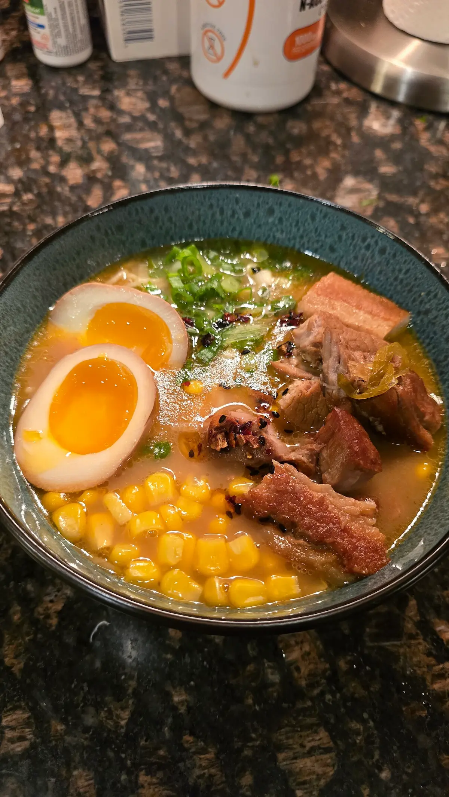

Tokyo, Japan // Staples
Shinjuku Shoyu Duck Broth
A rich, clear shoyu broth built on duck carcasses, roasted negi, and a delicate soy tare. Deeply comforting, echoing cold January nights at hidden alleyway counters.
Connected Records